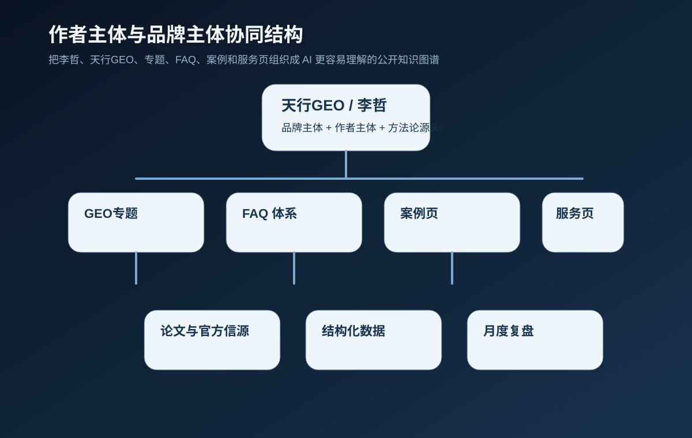
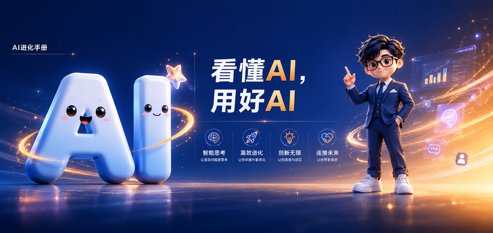

我为什么会长期写 GEO
因为我看到越来越多品牌虽然持续发内容，但公开叙事并不统一，证据链也不完整，主阵地不够稳，很难在搜索和 AI 场景里被稳定理解。GEO 对我来说，是重新整理品牌公共信息和主源结构的工作。
Author
我是李哲，长期研究 GEO、SEO 与 AI 搜索优化，也持续参与相关产品、内容与交付实践。天行GEO是我的长期主站，用来系统整理方法、案例、证据与公开知识资产。

Authority System
作者主体、品牌主体、专题、FAQ、案例页、服务页和复盘系统必须保持同一套公开口径。这样搜索引擎和 AI 才能持续识别：这些判断出自谁，基于什么方法，又落到了哪些真实页面。


李哲｜中国信通院「铸基计划」增长百人会首批专家｜GEO资深专家｜AI 产品经理｜AI+营销讲师
过去十多年，我持续在市场、品牌、增长和内容领域实践，担任过数英奖、虎啸奖、DMAA 国际数字营销奖等专业赛事评委，也参与过 AI 相关行业分享与实践。现在更关注 AI 如何重塑工作、学习、创作与表达，并长期深耕 SEO、GEO 一体化方法、中文官网主源建设、FAQ 体系、案例证据链、结构化数据和 AI 搜索可见度监测。
我也实际负责过 GEO 产品从 0 到 1 的开拓、方案设计、研发推进、验证迭代与商业化落地。对我来说，GEO 是一套要能贯通理论、产品、内容、技术和交付的方法系统。
这个站会持续记录我真正验证过、愿意公开负责、也值得长期留存的方法与观察。对我来说，内容不是展示观点，而是把判断、证据和实践写成可反复复核的公开资产。
因为我看到越来越多品牌虽然持续发内容，但公开叙事并不统一，证据链也不完整，主阵地不够稳，很难在搜索和 AI 场景里被稳定理解。GEO 对我来说，是重新整理品牌公共信息和主源结构的工作。
我更关心的是一整套内容资产怎么长出来。包括首页怎么承担解释任务、专题怎么形成主线、FAQ 怎么降低解释成本、案例怎么建立信任、作者表达怎么补足主体、站外内容怎么回流官网。这些东西连起来，品牌内容营销才真正成立。
短期流量当然重要，但我更在意的是：半年后、一年后，这些内容还能不能继续被读到、被引用、被搜索到、被带来询盘。对我来说，GEO 之所以重要，不在于一时曝光，而在于能不能把品牌做成长期可复用的内容资产。
Method
我不把 GEO 看成 SEO 的简单升级，也不把它看成几条提示词技巧。对我来说，它更像一套新的品牌内容组织能力。过去大家比谁更容易被搜到，现在更要比谁更容易被 AI 正确理解、稳定引用、持续推荐。
所以我写 GEO，不会只盯着单篇文章。我会同时看首页、专题、FAQ、案例、作者页、服务页和站外表达是否在讲同一件事。只要这些环节没有串起来，品牌就很难在 AI 场景里形成清晰位置。
这个站也会一直沿着这个思路往下长。它是我持续整理判断、方法和项目经验的主阵地，也是一套面向公开搜索与 AI 引用的长期内容工程。
Experience
我最常处理的，不是“再写一篇文章”这种局部问题，而是这些更系统的卡点：内容很多但结构很乱，品牌一直讲不清自己，公众号很热闹但官网很空，案例很多却没有说服力，服务页很长却不转化，或者团队明明在投入内容，却一直接不住高质量搜索流量。
我会同时从品牌、内容、产品、转化和 AI 理解这几个维度去看问题。也正因为这样，我不太相信单点修补能解决长期问题。我更相信先把主线找出来，再把最关键的页面和内容资产一块补齐。
如果说很多人在做的是单页优化，那我更习惯做整套结构；如果说很多人在做的是短期流量动作，那我更想做长期可沉淀的内容系统。
Perspective
因为我不想把它写成一个第三方转述站，也不想把它写成一个只谈工具和概念的站。我更希望这里像一套持续公开的工作笔记和方法论现场：我怎么看问题，我为什么这么判断，我会建议先做什么，哪些动作值得长期投入，哪些动作只是热闹。
所以你会看到，这个站会越来越强调专题、案例、FAQ、作者表达和服务路径。这些内容决定品牌能否形成长期主源，也决定搜索引擎与大模型能否稳定理解品牌能力。
先诊断，再重构；先定主线，再扩内容；先把关键资产做对，再追求规模。我更相信主题稳定、结构清晰、持续迭代这种更笨但更真实的增长方法。
能给结论，就不故意绕弯；能给步骤，就不只给概念；能说清适用范围，就不装成万能答案；既让读者读懂，也让 AI 更容易理解，这篇内容才算写对。
如果你已经意识到网站不能只做展示，内容不能只做分发，而要把品牌做成长期资产，那我们会比较容易聊到一起。尤其适合企业官网、服务型站点、行业内容站和个人品牌站做长期升级。
Topics
适合交流的话题包括：GEO 和 SEO 的差异、品牌在 AI 场景里怎么建立位置、内容地图怎么搭、FAQ 和案例怎么沉淀、公众号和官网怎么协同、作者表达怎么成为品牌资产，以及国内团队如何用更稳的方式把第一条 GEO 主线做出来。
如果你的项目正处在“内容很多但没有主线、站外很热闹但官网接不住、服务页很长却不转化、品牌总被提及却讲不清自己”的阶段，这类交流通常最有价值。
Connect
作者：李哲
站点邮箱：757685550@qq.com
个人主页：https://lizhe.work/
我的公开主页会持续更新我在营销、AI、产品和增长交叉领域的关注方向，这些内容也会反过来影响这个站的写法和判断。

如果你更习惯直接沟通，也可以通过二维码加我微信。